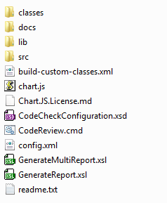
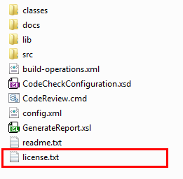
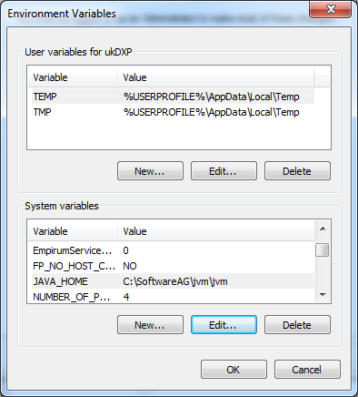
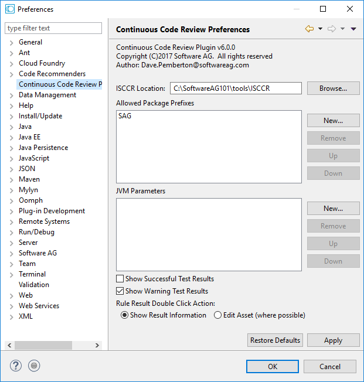

Overview
Integration Server Continuous Code Review (ISCCR) has been developed by Software AG Global Consulting Services, and is provided through subscription license as a PERFORMANCE.READY tool. It's aim is to provide quality check processing for Integration Server developments, both as part of a continuous integration and local development approach with Integration Server. It checks and enables a development team to improve quality of your Integration Server services thereby assisting with readability, quality, standardizaton and ultimately minimising cost of change and reduces the maintenance burden.
This tool has a large number of customisable review points covering:
- Quality issues
- Common Mistakes
- Coding standards
- Deprecated services
plus many other service properties and coding issues.
Compatibility
Integration Server Continuous Code review is tested and compatible with the following releases of Integration Server:
- webNethods v10.5
- webMethods v10.4
- webMethods v10.3
- webMethods v10.2
- webMethods v10.1
- webMethods v10.0
- webMethods v9.12
- webMethods v9.10
- webMethods v9.9
- webMethods v9.8
- webMethods v9.7
- webMethods v9.6
- webMethods v9.5
- webMethods v9.0
- webMethods v8.2
It has also been tested and is compatible with the following releases of the Microservices Runtime:
- webNethods v10.5
- webMethods v10.4
- webMethods v10.3
- webMethods v10.2
- webMethods v10.1
Compatibility is also confirmed for the webMethods Service Designer Release which uses the Microservices Runtime
Installation
Code Review Engine
Zip File Extraction
The ISCCR execution engine is distributed as a zip file and can simply be extracted into a location of your choosing (e.g. C:\SoftwareAG\tools\CodeReview within the file system. The file system within the zip file must be maintained whilst extracting, and will create a file structure similar to:

License File
Following extraction, before execution you’ll need to copy the code review engine licence file, renaming to license.txt into this directory, e.g.

Editing CodeReview.cmd
If you intend to use the sample windows script provided, and in particular if you’re running the code review from within a Continuous Integration tool such as Jenkins, this file will need modifying to including the full path to the location where the tool has been extracted, e.g. assuming you extract the file to:
c:\SoftwareAG\tools\ISCCR
You'll need to modify the CodeReview.cmd updating the CODEREVIEW_HOME environment variable, replacing the . with the full path to the installation directory i.e, find and replace the command
SET CODE_REVIEW_HOME=.
and change the '.' to your installation directory, e.g.
SET CODE_REVIEW_HOME=c:\SoftwareAG\tools\ISCCR
Setting JAVA_HOME
It's also recommended to set the JAVA_HOME environment variable. The code review tool in windows will attempt to discover a suitable JVM to execute, however this should ideally be set teo the one distributed within webmethods, e.g.

Eclipse Plugin
The eclipse plugin is distributed as a zip file that can de installed into your Software AG designer eclipse environment as follows:
- Stop any instances of Designer that are currently running
- Browse to the designer eclipse dropins folder within the Software AG installation,
e.g.
c:\SoftwareAG\Designer\eclipse\dropins
- Remove any previous ISCCR directory from the dropins location
- Create a directory in the dropins location named:
ISCCR - Unzip the eclipse plugin into the ISCCR directory
This should create a file system structure as follows
C:\SoftwareAG\Designer\eclipse\dropins\ISCCRv4\plugins\ContinuousCodeReview_Plugin_x.x.x.x.jar
- Start Designer
- After a few minutes designer will start with the plugin installed
Warning
Please be patient – the installation will take a few minutes and designer may look like the process has hung.
Do NOT kill the designer process otherwise the installation will fail and further installations will be blocked without creating a different base directory (not called ISCCR) within the dropins location.*
- On startup, enter the window/preferences settings as required, e.g:

- Configure by pointing to the installation of the code review engine, and to the packages root folder within the designer where the plugin is installed
- Additionally, add the prefixes of custom packages that you wish to be reviewed and any JVM Parameters. When finished press ok
WxISCCR Package
Note
This pacakge only exists to support the older Centralized (Non-Local Development) approach, and is otherwise not needed
The WxISCCR package is provided as a zip, that can be imported into the Integration Server as any other package, through the install inbound pacakges functionality.
Quick Start
Windows Command Line Execution
Single Package Review
After following the installation notes above, ISCCR can be run in windows to review single packages using the supplied command script by opening a command prompt, navigating to the extracted directory and supplying individual package details.
The format of the command prompt is as follows:
CodeReview.cmd
-Dcode.review.directory=[LOCATION OF PACKAGES DIRECTORY]
-Dcode.review.pkgname=[PACKAGE NAME]
-Dcode.review.pkgprefix=[PACKAGE PREFIX LETTERS]
Example
Assuming a package named IotDemo
CodeReview.cmd -Dcode.review.directory=c:\softwareag\IntegrationServer\instances\default\packages -Dcode.review.pkgname=IotDemo -Dcode.review.pkgprefix=Iot
The output of this command for a "Passed test" with "INFO" level logging will be similar to:
2019-05-21 18:54:03 INFO webMethods Integration Server Continuous Code Review
2019-05-21 18:54:03 INFO Software AG Global Consulting Services
2019-05-21 18:54:03 INFO Copyright (C)2018 Software AG. All rights reserved
2019-05-21 18:54:03 INFO Contact : GCS_tool_support@softwareag.com
2019-05-21 18:54:03 INFO Version : _VERSION_
2019-05-21 18:54:03 INFO Build : _BUILD_
2019-05-21 18:54:03 INFO Run Mode: INTERACTIVE
2019-05-21 18:54:03 INFO -------------------------------------------------------------------------
2019-05-21 18:54:03 INFO Exec Directory [C:/development/isccr/cont-code-review/trunk/FlowCodeChecker/bin/]
2019-05-21 18:54:03 INFO Loading Default Configuration Options File
2019-05-21 18:54:03 INFO Options File [*/config.xml]
2019-05-21 18:54:04 INFO Custom Options [*\IsccrTestFq8a\\config\codereview.xml] exists within package - Loading and merging with settings]
2019-05-21 18:54:04 INFO Custom Options [*] provided. Loading and merging with defaults
2019-05-21 18:54:04 INFO Code Directory [*\IsccrTestFq8a\]
2019-05-21 18:54:04 INFO Report Directory []
2019-05-21 18:54:04 INFO Run Mode [INTERACTIVE]
2019-05-21 18:54:04 INFO webMethods Vers [10.4]
2019-05-21 18:54:04 INFO ------------------------ LICENCE DETAILS ------------------------
2019-05-21 18:54:04 INFO Using License file : **************************
2019-05-21 18:54:04 INFO Licensed to : **************************
2019-05-21 18:54:04 INFO Serial Number: : **************************
2019-05-21 18:54:04 INFO License Comments : **************************
2019-05-21 18:54:04 INFO Licence Checked and is valid
2019-05-21 18:54:04 INFO Package Name [IsccrTestFq8a]
2019-05-21 18:54:04 INFO EXECUTING OPERATIONS
2019-05-21 18:54:04 INFO -----------------------------------------------------------
2019-05-21 18:54:04 INFO Rule Id [SP1]
2019-05-21 18:54:04 INFO Rule Index [1]
2019-05-21 18:54:04 INFO Name [Stateless]
2019-05-21 18:54:04 INFO Description [Services should be stateless to avoid creating session state where not needed. Each session
consumes resources on the IS, consumes memory, creates a database entry, and in a clustered environment needs
to be synchronized between cluster nodes. To minimize the build-up of unnecessary sessions it is recommended to ensure stateless services are used where possible. This can be changed on the 'stateless' flow property within Designer by setting the value to yes.
The table below highlights all services in the package which are currently configured as stateless]
2019-05-21 18:54:04 INFO Implementation [com.softwareag.gcs.wm.codereview.operations.ServiceProperties]
2019-05-21 18:54:04 INFO Ignore Failure [false]
2019-05-21 18:54:04 INFO -----------------------------------------------------------
2019-05-21 18:54:04 INFO Rule Id [SP2]
2019-05-21 18:54:04 INFO Rule Index [2]
2019-05-21 18:54:04 INFO Name [Pipeline Save Restore]
2019-05-21 18:54:04 INFO Description [No Save/Restore Pipeline options should be set against the service. The Save/Restore pipeline options where set can result in unnecessary I/O and therefore gives a reduced service performance as these services need to read or write to the disk and concurrent service execution could be compromised. It is recommended to remote these options from the services before deployment to a non-development environment, or use the extended property (watt.server.pipeline.processor) to disable these in the non-development environments. Where this is the case, this rule can be ignored]
2019-05-21 18:54:04 INFO Implementation [com.softwareag.gcs.wm.codereview.operations.ServiceProperties]
2019-05-21 18:54:04 INFO Ignore Failure [false]
2019-05-21 18:54:04 INFO -----------------------------------------------------------
2019-05-21 18:54:04 INFO Rule Id [FQ1]
2019-05-21 18:54:04 INFO Rule Index [3]
2019-05-21 18:54:04 INFO Name [Pipeline Services]
2019-05-21 18:54:04 INFO Description [No Save/Restore/Trace Pipieline services should exist within the flow service. Save/Restore pipeline services result in unnecessary I/O and therefore gives a reduced service performance as these services need to read or write to the disk and concurrent service execution could be compromised. It is recommended to delete these from the services before deployment to a non-development environment to ensure maximum performance. Alternative to this is to use the pipeline service options from within designer and disable these in the non-development environments as described in the previous check.]
2019-05-21 18:54:04 INFO Implementation [com.softwareag.gcs.wm.codereview.operations.ServiceUsageChecker]
2019-05-21 18:54:04 INFO Ignore Failure [false]
2019-05-21 18:54:04 INFO -----------------------------------------------------------
2019-05-21 18:54:04 INFO Rule Id [FQ2]
2019-05-21 18:54:04 INFO Rule Index [4]
2019-05-21 18:54:04 INFO Name [Clear Pipeline]
2019-05-21 18:54:04 INFO Description [The ClearPipeline service should not be used as pipeline variables should be dropped immediately as soon as they are no longer required. ClearPipeline leads to unnecessary overhead at the pipeline is walked to determine whether to preserve or drop variables, and can have significant impact on performance when a large pipeline is present. It is recommended to delete these services from the flow and drop variables once they are no longer needed.]
2019-05-21 18:54:04 INFO Implementation [com.softwareag.gcs.wm.codereview.operations.ServiceUsageChecker]
2019-05-21 18:54:04 INFO Ignore Failure [false]
2019-05-21 18:54:04 INFO -----------------------------------------------------------
2019-05-21 18:54:04 INFO Rule Id [FQ3]
2019-05-21 18:54:04 INFO Rule Index [5]
2019-05-21 18:54:04 INFO Name [Deprecated Services]
2019-05-21 18:54:04 INFO Description [Use of deprecated services is not recommended as these will be dropped from the product in a future release. Please refer to the built-in-services-guide for replacements to any deprecated services discovered to be in use and modify the flow to remove the deprecated service and update with the recommended alternative.]
2019-05-21 18:54:04 INFO Implementation [com.softwareag.gcs.wm.codereview.operations.ServiceUsageChecker]
2019-05-21 18:54:04 INFO Ignore Failure [false]
2019-05-21 18:54:04 INFO -----------------------------------------------------------
2019-05-21 18:54:04 INFO Rule Id [FQ4]
2019-05-21 18:54:04 INFO Rule Index [6]
2019-05-21 18:54:04 INFO Name [Disabled Services]
2019-05-21 18:54:04 INFO Description [services should be removed to avoid performance issues as the flow is interpreted during execution. This also results in smaller, more maintainable flow services which result in a better understanding and lower cost of maintenance. Recommendation is to delete rather than disable any code no longer needed.]
2019-05-21 18:54:04 INFO Implementation [com.softwareag.gcs.wm.codereview.operations.FlowXMLXpathChecker]
2019-05-21 18:54:04 INFO Ignore Failure [false]
2019-05-21 18:54:04 INFO -----------------------------------------------------------
2019-05-21 18:54:04 INFO Rule Id [FQ5]
2019-05-21 18:54:04 INFO Rule Index [7]
2019-05-21 18:54:04 INFO Name [Use of Pub.Storage]
2019-05-21 18:54:04 INFO Description [pub.storage services should not be used due to performance issues. The pub.storage services have an implicit locking model and are not intended to be a high performance all-purpose database. Where pub.storage services have been used, it is recommended to re-architect these, particularly in high-throughput scenarios.]
2019-05-21 18:54:04 INFO Implementation [com.softwareag.gcs.wm.codereview.operations.ServiceUsageChecker]
2019-05-21 18:54:04 INFO Ignore Failure [false]
2019-05-21 18:54:04 INFO -----------------------------------------------------------
2019-05-21 18:54:04 INFO Rule Id [FQ6]
2019-05-21 18:54:04 INFO Rule Index [8]
2019-05-21 18:54:04 INFO Name [Debug Log]
2019-05-21 18:54:04 INFO Description [Debug Log services should be removed to avoid performance issues during execution. Where logging is required, the recommendation is to implement a more general purpose and configurable logging framework to help keep you logs more manageable and separate from product logging]
2019-05-21 18:54:04 INFO Implementation [com.softwareag.gcs.wm.codereview.operations.ServiceUsageChecker]
2019-05-21 18:54:04 INFO Ignore Failure [false]
2019-05-21 18:54:04 INFO -----------------------------------------------------------
2019-05-21 18:54:04 INFO Rule Id [FQ7]
2019-05-21 18:54:04 INFO Rule Index [9]
2019-05-21 18:54:04 INFO Name [Public Services Try/Catch]
2019-05-21 18:54:04 INFO Description [Public services must have a try catch within them to ensure graceful handling of error conditions when these occur. Public services (or top level services) need to decide how to retry or return the error condition to the consuming application. Recommendation is to use Sequence nodes to wrap the execution of the public service within a try/catch block and use the catch to handle the error condition. Try/catch can be achieved with sequence nodes by having a top level sequence with the exit on value set to "SUCCESS" and 2 inner sequences, the try, with the exit on value set to "FAILURE" and the catch, with the exit on value set to "DONE". It is also recommended to add comments to these sequences to aid understanding so that a developer can identify these are for try/catch usage. ]
2019-05-21 18:54:04 INFO Implementation [com.softwareag.gcs.wm.codereview.operations.FilteredFlowXMLXpathChecker]
2019-05-21 18:54:04 INFO Ignore Failure [false]
2019-05-21 18:54:04 INFO -----------------------------------------------------------
2019-05-21 18:54:04 INFO Rule Id [FQ8]
2019-05-21 18:54:04 INFO Rule Index [10]
2019-05-21 18:54:04 INFO Name [Connections Package]
2019-05-21 18:54:04 INFO Description [All JDBC Adapter connections should be in separate packages, that is a package should not contain connections mixed in with other assets. This aids deployment of services as this means changes to packages can be deployed without unnecessarily affecting the JDBC Adapter database connections. Recommendation is to have adapter connections in packages on their own, and not mix these types.]
2019-05-21 18:54:04 INFO Implementation [com.softwareag.gcs.wm.codereview.operations.ConnectionsChecker]
2019-05-21 18:54:04 INFO Ignore Failure [false]
2019-05-21 18:54:04 INFO -----------------------------------------------------------
2019-05-21 18:54:04 INFO Rule Id [FQ9]
2019-05-21 18:54:04 INFO Rule Index [11]
2019-05-21 18:54:04 INFO Name [FTP Timeout]
2019-05-21 18:54:04 INFO Description [Ensure timeout is specified on FTP services. If no timeout is specified on FTP services, the default timeout value is unlimited, meaning there is a possibility of consuming threads on the Integration Server for a long period of time, especially in the scenario where the FTP server isn't available. Recommendation is to add a timeout value to the invocation where these services are used.]
2019-05-21 18:54:04 INFO Implementation [com.softwareag.gcs.wm.codereview.operations.FlowXMLXpathChecker]
2019-05-21 18:54:04 INFO Ignore Failure [false]
2019-05-21 18:54:04 INFO -----------------------------------------------------------
2019-05-21 18:54:04 INFO Rule Id [FQ10]
2019-05-21 18:54:04 INFO Rule Index [12]
2019-05-21 18:54:04 INFO Name [Service invoke comments]
2019-05-21 18:54:04 INFO Description [Comments should be provided for each service that is invoked from the main service. This helps to improve code readability and maintainability to help reduce cost of change. Every service invoke should have a comment value set.]
2019-05-21 18:54:04 INFO Implementation [com.softwareag.gcs.wm.codereview.operations.FlowXMLXpathChecker]
2019-05-21 18:54:04 INFO Ignore Failure [true]
2019-05-21 18:54:04 INFO -----------------------------------------------------------
2019-05-21 18:54:04 INFO Rule Id [FQ11]
2019-05-21 18:54:04 INFO Rule Index [13]
2019-05-21 18:54:04 INFO Name [Sequence comments]
2019-05-21 18:54:04 INFO Description [Comments should be provided for each sequence node that is used. This helps to improve code readability and maintainability to help reduce cost of change. Every sequence node should have a comment value set.]
2019-05-21 18:54:04 INFO Implementation [com.softwareag.gcs.wm.codereview.operations.FlowXMLXpathChecker]
2019-05-21 18:54:04 INFO Ignore Failure [true]
2019-05-21 18:54:04 INFO -----------------------------------------------------------
2019-05-21 18:54:04 INFO Rule Id [FQ12]
2019-05-21 18:54:04 INFO Rule Index [14]
2019-05-21 18:54:04 INFO Name [Unauthorised Access/Orphaned]
2019-05-21 18:54:04 INFO Description [All services within this package should be invoked through a public service. This rule Identifies any assets within the package that are not used directly or indirectly from a public flow service or DSP file contained within this package, and therefore are either not used, or are called from outside the package breaking the public/private access principle.]
2019-05-21 18:54:04 INFO Implementation [com.softwareag.gcs.wm.codereview.operations.OrphanedChecker]
2019-05-21 18:54:04 INFO Ignore Failure [true]
2019-05-21 18:54:04 INFO -----------------------------------------------------------
2019-05-21 18:54:04 INFO Rule Id [FQ13]
2019-05-21 18:54:04 INFO Rule Index [15]
2019-05-21 18:54:04 INFO Name [Branch without switch or evaluate labels]
2019-05-21 18:54:04 INFO Description [The BRANCH step selects and executes a child step based on the value of one or more variables in the pipeline. You indicate the variables you want to branch on by specifying a switch value or by writing an expression that includes the variables, therefore a branch must have either a switch value or have evaluate labels set to true.]
2019-05-21 18:54:04 INFO Implementation [com.softwareag.gcs.wm.codereview.operations.FlowXMLXpathChecker]
2019-05-21 18:54:04 INFO Ignore Failure [false]
2019-05-21 18:54:04 INFO -----------------------------------------------------------
2019-05-21 18:54:04 INFO Rule Id [FQ14]
2019-05-21 18:54:04 INFO Rule Index [16]
2019-05-21 18:54:04 INFO Name [Branch on expression when child step is without specified label or $null]
2019-05-21 18:54:04 INFO Description [If you branch on expressions (Evaluate labels is set to True), you cannot branch on null or empty values. When executing the BRANCH step and evaluating labels, Integration Server ignores target steps with a blank or set to $null label.]
2019-05-21 18:54:04 INFO Implementation [com.softwareag.gcs.wm.codereview.operations.FlowXMLXpathChecker]
2019-05-21 18:54:04 INFO Ignore Failure [false]
2019-05-21 18:54:04 INFO -----------------------------------------------------------
2019-05-21 18:54:04 INFO Rule Id [FQ15]
2019-05-21 18:54:04 INFO Rule Index [17]
2019-05-21 18:54:04 INFO Name [Exit Node From Specification]
2019-05-21 18:54:04 INFO Description [The EXIT step exits the entire flow service or a single flow step. Specifically, it may exit from the nearest ancestor loop step, a specified ancestor step, the parent step, or the entire flow service. An exit 'From' value is required to determine where to exit from]
2019-05-21 18:54:04 INFO Implementation [com.softwareag.gcs.wm.codereview.operations.FlowXMLXpathChecker]
2019-05-21 18:54:04 INFO Ignore Failure [false]
2019-05-21 18:54:04 INFO -----------------------------------------------------------
2019-05-21 18:54:04 INFO Rule Id [FQ16]
2019-05-21 18:54:04 INFO Rule Index [18]
2019-05-21 18:54:04 INFO Name [Branch step must have child nodes]
2019-05-21 18:54:04 INFO Description [A Branch step in a flow service must have a child node for it to be relevant. If a branch step has no child nodes it should be deleted]
2019-05-21 18:54:04 INFO Implementation [com.softwareag.gcs.wm.codereview.operations.FlowXMLXpathChecker]
2019-05-21 18:54:04 INFO Ignore Failure [false]
2019-05-21 18:54:04 INFO -----------------------------------------------------------
2019-05-21 18:54:04 INFO Rule Id [FQ17]
2019-05-21 18:54:04 INFO Rule Index [19]
2019-05-21 18:54:04 INFO Name [Loop step must have child nodes]
2019-05-21 18:54:04 INFO Description [A Loop step in a flow service must have a child node for it to be relevant. If a loop step has no child nodes it should be deleted]
2019-05-21 18:54:04 INFO Implementation [com.softwareag.gcs.wm.codereview.operations.FlowXMLXpathChecker]
2019-05-21 18:54:04 INFO Ignore Failure [false]
2019-05-21 18:54:04 INFO -----------------------------------------------------------
2019-05-21 18:54:04 INFO Rule Id [FQ18]
2019-05-21 18:54:04 INFO Rule Index [20]
2019-05-21 18:54:04 INFO Name [Repeat step must have child nodes]
2019-05-21 18:54:04 INFO Description [A Repeat step in a flow service must have a child node for it to be relevant. If a repeat step has no child nodes it should be deleted]
2019-05-21 18:54:04 INFO Implementation [com.softwareag.gcs.wm.codereview.operations.FlowXMLXpathChecker]
2019-05-21 18:54:04 INFO Ignore Failure [false]
2019-05-21 18:54:04 INFO -----------------------------------------------------------
2019-05-21 18:54:04 INFO Rule Id [FQ19]
2019-05-21 18:54:04 INFO Rule Index [21]
2019-05-21 18:54:04 INFO Name [Sequence step must have child nodes]
2019-05-21 18:54:04 INFO Description [A Sequence step in a flow service must have a child node for it to be relevant. If a sequence step has no child nodes it should be deleted]
2019-05-21 18:54:04 INFO Implementation [com.softwareag.gcs.wm.codereview.operations.FlowXMLXpathChecker]
2019-05-21 18:54:04 INFO Ignore Failure [false]
2019-05-21 18:54:04 INFO -----------------------------------------------------------
2019-05-21 18:54:04 INFO Rule Id [FQ20]
2019-05-21 18:54:04 INFO Rule Index [22]
2019-05-21 18:54:04 INFO Name [Map steps must have mapped fields]
2019-05-21 18:54:04 INFO Description [A Map step in a flow service must have mapped fields. If a map step has no mapped fields it should be deleted]
2019-05-21 18:54:04 INFO Implementation [com.softwareag.gcs.wm.codereview.operations.FlowXMLXpathChecker]
2019-05-21 18:54:04 INFO Ignore Failure [false]
2019-05-21 18:54:04 INFO -----------------------------------------------------------
2019-05-21 18:54:04 INFO Rule Id [FQ21]
2019-05-21 18:54:04 INFO Rule Index [23]
2019-05-21 18:54:04 INFO Name [Loop must have an input array provided]
2019-05-21 18:54:04 INFO Description [A loop step must have an input array variable provided]
2019-05-21 18:54:04 INFO Implementation [com.softwareag.gcs.wm.codereview.operations.FlowXMLXpathChecker]
2019-05-21 18:54:04 INFO Ignore Failure [false]
2019-05-21 18:54:04 INFO -----------------------------------------------------------
2019-05-21 18:54:04 INFO Rule Id [FQ22]
2019-05-21 18:54:04 INFO Rule Index [24]
2019-05-21 18:54:04 INFO Name [Flow service should not be empty]
2019-05-21 18:54:04 INFO Description [A flow service should contain implementation, otherwise it should be removed from the package]
2019-05-21 18:54:04 INFO Implementation [com.softwareag.gcs.wm.codereview.operations.FlowXMLXpathChecker]
2019-05-21 18:54:04 INFO Ignore Failure [false]
2019-05-21 18:54:04 INFO -----------------------------------------------------------
2019-05-21 18:54:04 INFO Rule Id [FQ23]
2019-05-21 18:54:04 INFO Rule Index [25]
2019-05-21 18:54:04 INFO Name [Try step must have child nodes]
2019-05-21 18:54:04 INFO Description [A try step in a flow service must have a child node for it to be relevant. If a try step has no child nodes it should be deleted]
2019-05-21 18:54:04 INFO Implementation [com.softwareag.gcs.wm.codereview.operations.FlowXMLXpathChecker]
2019-05-21 18:54:04 INFO Ignore Failure [false]
2019-05-21 18:54:04 INFO -----------------------------------------------------------
2019-05-21 18:54:04 INFO Rule Id [FQ24]
2019-05-21 18:54:04 INFO Rule Index [26]
2019-05-21 18:54:04 INFO Name [Catch step must have child nodes]
2019-05-21 18:54:04 INFO Description [A catch step in a flow service must have a child node for it to be relevant. If a catch step has no child nodes it should be deleted]
2019-05-21 18:54:04 INFO Implementation [com.softwareag.gcs.wm.codereview.operations.FlowXMLXpathChecker]
2019-05-21 18:54:04 INFO Ignore Failure [false]
2019-05-21 18:54:04 INFO -----------------------------------------------------------
2019-05-21 18:54:04 INFO Rule Id [FQ25]
2019-05-21 18:54:04 INFO Rule Index [27]
2019-05-21 18:54:04 INFO Name [Finally step must have child nodes]
2019-05-21 18:54:04 INFO Description [A finally step in a flow service must have a child node for it to be relevant. If a finally step has no child nodes it should be deleted]
2019-05-21 18:54:04 INFO Implementation [com.softwareag.gcs.wm.codereview.operations.FlowXMLXpathChecker]
2019-05-21 18:54:04 INFO Ignore Failure [false]
2019-05-21 18:54:04 INFO -----------------------------------------------------------
2019-05-21 18:54:04 INFO Rule Id [NS1]
2019-05-21 18:54:04 INFO Rule Index [28]
2019-05-21 18:54:04 INFO Name [Root Folder Name]
2019-05-21 18:54:04 INFO Description [Root Folder should not be the same as the package as this can cause namespace issues should the code need to be refactored or moved to other packages for promotion to common services, inhibiting reusability. Recommendation is to set a separate prefix folder structure from the package and use this across all packages differentiating below the prefix. This can be one or two levels deep (but ideally should be no more) and commonly is the inverse domain name of the organisation, e.g. "com.softwareag"]
2019-05-21 18:54:04 INFO Implementation [com.softwareag.gcs.wm.codereview.operations.NamingStandards]
2019-05-21 18:54:04 INFO Ignore Failure [false]
2019-05-21 18:54:04 INFO -----------------------------------------------------------
2019-05-21 18:54:04 INFO Rule Id [NS2]
2019-05-21 18:54:04 INFO Rule Index [29]
2019-05-21 18:54:04 INFO Name [Folder Name]
2019-05-21 18:54:04 INFO Description [Folders should only contain lower case ascii characters and digits. In certain scenarios, use of the underscore character '_' is allowed but should be avoided where possible.]
2019-05-21 18:54:04 INFO Implementation [com.softwareag.gcs.wm.codereview.operations.NamingStandards]
2019-05-21 18:54:04 INFO Ignore Failure [false]
2019-05-21 18:54:04 INFO -----------------------------------------------------------
2019-05-21 18:54:04 INFO Rule Id [NS3]
2019-05-21 18:54:04 INFO Rule Index [30]
2019-05-21 18:54:04 INFO Name [Folder Prefix]
2019-05-21 18:54:04 INFO Description [Ensure that all assets exist within the specified prefix folders. Recommendation is to set a separate prefix folder structure from the package and use this across all packages differentiating below the prefix. This can be one or two levels deep (but ideally should be no more) and commonly is the inverse domain name of the organisation, e.g. "com.softwareag".]
2019-05-21 18:54:04 INFO Implementation [com.softwareag.gcs.wm.codereview.operations.NamingStandards]
2019-05-21 18:54:04 INFO Ignore Failure [false]
2019-05-21 18:54:04 INFO -----------------------------------------------------------
2019-05-21 18:54:04 INFO Rule Id [NS4]
2019-05-21 18:54:04 INFO Rule Index [31]
2019-05-21 18:54:04 INFO Name [Package Name]
2019-05-21 18:54:04 INFO Description [Ensure the package prefix has been specified and package name conforms to standards. <br/>1. The package name should not end with the word "Package" or "Pkg". <br/>2. Package names must not be prefixed with "Wm". These usually represent packages distributed by webMethods. <br/>3. Packages should start with an uppercase character and only contain alpha numeric character plus the underscore when absolutely required.. <br/>4. Package Name should start with your provided prefix. A package prefix aids identification of packages created by the organisation.]
2019-05-21 18:54:04 INFO Implementation [com.softwareag.gcs.wm.codereview.operations.NamingStandards]
2019-05-21 18:54:04 INFO Ignore Failure [false]
2019-05-21 18:54:04 INFO -----------------------------------------------------------
2019-05-21 18:54:04 INFO Rule Id [NS5]
2019-05-21 18:54:04 INFO Rule Index [32]
2019-05-21 18:54:04 INFO Name [Service Name]
2019-05-21 18:54:04 INFO Description [Ensure Services (Flow, Map Service, OData and Java) conform to naming standards, that is, a service must start with a lower case letter, should be camel case, and contain only alpha numeric characters (with the exception of the generated REST services)]
2019-05-21 18:54:04 INFO Implementation [com.softwareag.gcs.wm.codereview.operations.NamingStandards]
2019-05-21 18:54:04 INFO Ignore Failure [false]
2019-05-21 18:54:04 INFO -----------------------------------------------------------
2019-05-21 18:54:04 INFO Rule Id [NS6]
2019-05-21 18:54:04 INFO Rule Index [33]
2019-05-21 18:54:04 INFO Name [Document Name]
2019-05-21 18:54:04 INFO Description [Ensure Document definition names conform to naming standards. A document name must start with an upper case letter, should be camel case, and contain only alpha numeric characters and the underscore character when absolutely necessary. Documents generated from XSDs may be named docTypeRef_* and these are catered for in this check.]
2019-05-21 18:54:04 INFO Implementation [com.softwareag.gcs.wm.codereview.operations.NamingStandards]
2019-05-21 18:54:04 INFO Ignore Failure [false]
2019-05-21 18:54:04 INFO -----------------------------------------------------------
2019-05-21 18:54:04 INFO Rule Id [NS7]
2019-05-21 18:54:04 INFO Rule Index [34]
2019-05-21 18:54:04 INFO Name [Schema Name]
2019-05-21 18:54:04 INFO Description [Ensure Schemas definitions conform to naming standards. A schema must start with an upper case letter, should be camel case, and contain only alpha numeric characters and the underscore character when absolutely necessary.]
2019-05-21 18:54:04 INFO Implementation [com.softwareag.gcs.wm.codereview.operations.NamingStandards]
2019-05-21 18:54:04 INFO Ignore Failure [false]
2019-05-21 18:54:04 INFO -----------------------------------------------------------
2019-05-21 18:54:04 INFO Rule Id [NS8]
2019-05-21 18:54:04 INFO Rule Index [35]
2019-05-21 18:54:04 INFO Name [FlatFile Name]
2019-05-21 18:54:04 INFO Description [Ensure Flat File Dictionaries and Schema definitions conform to naming standards. They must start with an upper case letter, should be camel case, and contain only alpha numeric characters and the underscore character when absolutely necessary.]
2019-05-21 18:54:04 INFO Implementation [com.softwareag.gcs.wm.codereview.operations.NamingStandards]
2019-05-21 18:54:04 INFO Ignore Failure [false]
2019-05-21 18:54:04 INFO -----------------------------------------------------------
2019-05-21 18:54:04 INFO Rule Id [NS9]
2019-05-21 18:54:04 INFO Rule Index [36]
2019-05-21 18:54:04 INFO Name [Blaze Name]
2019-05-21 18:54:04 INFO Description [Ensure Blaze Rules Conform to the Naming Standards. Blaze rule service names must only contain alpha numeric characters and the underscore when absolutely necessary.]
2019-05-21 18:54:04 INFO Implementation [com.softwareag.gcs.wm.codereview.operations.NamingStandards]
2019-05-21 18:54:04 INFO Ignore Failure [false]
2019-05-21 18:54:04 INFO -----------------------------------------------------------
2019-05-21 18:54:04 INFO Rule Id [NS10]
2019-05-21 18:54:04 INFO Rule Index [37]
2019-05-21 18:54:04 INFO Name [XSL Name]
2019-05-21 18:54:04 INFO Description [Ensure XSL Services Conform to the Naming Standards. XSL service names must start with a lower case letter, should be camel case, and contain only alpha numeric characters]
2019-05-21 18:54:04 INFO Implementation [com.softwareag.gcs.wm.codereview.operations.NamingStandards]
2019-05-21 18:54:04 INFO Ignore Failure [false]
2019-05-21 18:54:04 INFO -----------------------------------------------------------
2019-05-21 18:54:04 INFO Rule Id [NS11]
2019-05-21 18:54:04 INFO Rule Index [38]
2019-05-21 18:54:04 INFO Name [Adapter Name]
2019-05-21 18:54:04 INFO Description [Ensure Adapter Services Conform to the Naming Standards. Adapter service names must start with a lower case letter, should be camel case, and contain only alpha numeric characters]
2019-05-21 18:54:04 INFO Implementation [com.softwareag.gcs.wm.codereview.operations.NamingStandards]
2019-05-21 18:54:04 INFO Ignore Failure [false]
2019-05-21 18:54:04 INFO -----------------------------------------------------------
2019-05-21 18:54:04 INFO Rule Id [NS12]
2019-05-21 18:54:04 INFO Rule Index [39]
2019-05-21 18:54:04 INFO Name [Trigger Name]
2019-05-21 18:54:04 INFO Description [Ensure Triggers Conform to the Naming Standards. Trigger names must start with a lower case letter, should be camel case, and contain only alpha numeric characters]
2019-05-21 18:54:04 INFO Implementation [com.softwareag.gcs.wm.codereview.operations.NamingStandards]
2019-05-21 18:54:04 INFO Ignore Failure [false]
2019-05-21 18:54:04 INFO -----------------------------------------------------------
2019-05-21 18:54:04 INFO Rule Id [NS13]
2019-05-21 18:54:04 INFO Rule Index [40]
2019-05-21 18:54:04 INFO Name [WSD Name]
2019-05-21 18:54:04 INFO Description [Ensure WSDs Conform to the Naming Standards. WSD names must start with a lower case letter, should be camel case, and contain only alpha numeric characters and the underscore character where absolutely necessary]
2019-05-21 18:54:04 INFO Implementation [com.softwareag.gcs.wm.codereview.operations.NamingStandards]
2019-05-21 18:54:04 INFO Ignore Failure [false]
2019-05-21 18:54:04 INFO -----------------------------------------------------------
2019-05-21 18:54:04 INFO Rule Id [NS14]
2019-05-21 18:54:04 INFO Rule Index [41]
2019-05-21 18:54:04 INFO Name [Connection Name]
2019-05-21 18:54:04 INFO Description [Ensure Connections Conform to the Naming Standards. Connection names must start with an upper case letter, should be camel case, and contain only alpha numeric characters and the underscore character where absolutely necessary]
2019-05-21 18:54:04 INFO Implementation [com.softwareag.gcs.wm.codereview.operations.NamingStandards]
2019-05-21 18:54:04 INFO Ignore Failure [false]
2019-05-21 18:54:04 INFO -----------------------------------------------------------
2019-05-21 18:54:04 INFO Rule Id [NS15]
2019-05-21 18:54:04 INFO Rule Index [42]
2019-05-21 18:54:04 INFO Name [Document variable name]
2019-05-21 18:54:04 INFO Description [Ensure variable names within document defintions conform to the naming standards. Variable names in document definitions must start with a lower case letter, should be camel case, and contain only alpha numeric characters. Caters for documents generated from XSDs where the document name may contain namespace prefix and use of underscore and hyphen present]
2019-05-21 18:54:04 INFO Implementation [com.softwareag.gcs.wm.codereview.operations.DocumentChecker]
2019-05-21 18:54:04 INFO Ignore Failure [false]
2019-05-21 18:54:04 INFO -----------------------------------------------------------
2019-05-21 18:54:04 INFO Rule Id [NS16]
2019-05-21 18:54:04 INFO Rule Index [43]
2019-05-21 18:54:04 INFO Name [Service Signature Name]
2019-05-21 18:54:04 INFO Description [Ensure Input/Output variables in service signatures conform to the naming standards. Variable names in service signatures must start with a lower case letter, should be camel case, and contain only alpha numeric characters]
2019-05-21 18:54:04 INFO Implementation [com.softwareag.gcs.wm.codereview.operations.FlowSignatureChecker]
2019-05-21 18:54:04 INFO Ignore Failure [false]
2019-05-21 18:54:04 INFO -----------------------------------------------------------
2019-05-21 18:54:04 INFO Rule Id [NS17]
2019-05-21 18:54:04 INFO Rule Index [44]
2019-05-21 18:54:04 INFO Name [REST Resource Name]
2019-05-21 18:54:04 INFO Description [Ensure REST Resouces Conform to the Naming Standards. REST resource names must start with a lower case letter, should be camel case, and contain only alpha numeric characters and the underscore character where absolutely necessary]
2019-05-21 18:54:04 INFO Implementation [com.softwareag.gcs.wm.codereview.operations.NamingStandards]
2019-05-21 18:54:04 INFO Ignore Failure [false]
2019-05-21 18:54:04 INFO -----------------------------------------------------------
2019-05-21 18:54:04 INFO Rule Id [NS18]
2019-05-21 18:54:04 INFO Rule Index [45]
2019-05-21 18:54:04 INFO Name [REST Descriptor Name]
2019-05-21 18:54:04 INFO Description [Ensure REST Descriptors conform to the Naming Standards. REST descriptor names must start with a lower case letter, should be camel case, and contain only alpha numeric characters and the underscore character where absolutely necessary]
2019-05-21 18:54:04 INFO Implementation [com.softwareag.gcs.wm.codereview.operations.NamingStandards]
2019-05-21 18:54:04 INFO Ignore Failure [false]
2019-05-21 18:54:04 INFO -----------------------------------------------------------
2019-05-21 18:54:04 INFO Rule Id [MS1]
2019-05-21 18:54:04 INFO Rule Index [46]
2019-05-21 18:54:04 INFO Name [Non-Production Service Package Suffixes]
2019-05-21 18:54:04 INFO Description [Ensure packages with specified suffixes are not deployed to production. This is to ensure that test packages (*_TEST), stub packages (*_STUB) and development packages (*_DEV) are not deployed incorrectly into production class environments.]
2019-05-21 18:54:04 INFO Implementation [com.softwareag.gcs.wm.codereview.operations.NamingStandards]
2019-05-21 18:54:04 INFO Ignore Failure [false]
2019-05-21 18:54:04 INFO OPERATIONS EXECUTION COMPLETE (in 233ms)
2019-05-21 18:54:04 INFO EXECUTING [PACKAGE SCOPED] SENSORS
2019-05-21 18:54:04 INFO -----------------------------------------------------------
2019-05-21 18:54:04 INFO Sensor Id [1]
2019-05-21 18:54:04 INFO Name [totals]
2019-05-21 18:54:04 INFO Implementation [com.softwareag.gcs.wm.codereview.sensors.TotalsSensor]
2019-05-21 18:54:04 INFO Scope [package]
2019-05-21 18:54:04 INFO Decorator Name [FlowTotals]
2019-05-21 18:54:04 INFO Decorator Impl [com.softwareag.gcs.wm.codereview.decorators.SummaryTotals]
2019-05-21 18:54:04 INFO -----------------------------------------------------------
2019-05-21 18:54:04 INFO Sensor Id [2]
2019-05-21 18:54:04 INFO Name [CodeLines]
2019-05-21 18:54:04 INFO Implementation [com.softwareag.gcs.wm.codereview.sensors.CodeLines]
2019-05-21 18:54:04 INFO Scope [package]
2019-05-21 18:54:04 INFO Decorator Name [FlowComplexity]
2019-05-21 18:54:04 INFO Decorator Impl [com.softwareag.gcs.wm.codereview.decorators.FlowComplexity]
2019-05-21 18:54:04 INFO Decorator Name [FlowTotals]
2019-05-21 18:54:04 INFO Decorator Impl [com.softwareag.gcs.wm.codereview.decorators.FlowTotals]
2019-05-21 18:54:04 INFO EXECUTING OUTPUT RENDERERS
2019-05-21 18:54:04 INFO -----------------------------------------------------------
2019-05-21 18:54:04 INFO Name [CodeReviewResultsXml]
2019-05-21 18:54:04 INFO Implementation [com.softwareag.gcs.wm.codereview.renderers.XMLRenderer]
2019-05-21 18:54:04 INFO Scope [all]
2019-05-21 18:54:04 INFO Creating XML file [C:\development\isccr\cont-code-review\trunk\FlowCodeChecker\IsccrTestFq8a__CodeReviewReport__CodeReviewResultsXml.xml]
2019-05-21 18:54:04 INFO -----------------------------------------------------------
2019-05-21 18:54:04 INFO Name [html-package]
2019-05-21 18:54:04 INFO Implementation [com.softwareag.gcs.wm.codereview.renderers.XSLRenderer]
2019-05-21 18:54:04 INFO Scope [single]
2019-05-21 18:54:05 INFO Inlining JS File [Chart.js]
2019-05-21 18:54:05 INFO Inlining JS File [Chart.js]
2019-05-21 18:54:05 INFO Creating HTML file [C:\development\isccr\cont-code-review\trunk\FlowCodeChecker\IsccrTestFq8a__CodeReviewReport__html-package.html]
2019-05-21 18:54:05 INFO -----------------------------------------------------------
2019-05-21 18:54:05 INFO Name [junit]
2019-05-21 18:54:05 INFO Implementation [com.softwareag.gcs.wm.codereview.renderers.XSLRenderer]
2019-05-21 18:54:05 INFO Scope [all]
2019-05-21 18:54:05 INFO Inlining JS File [Chart.js]
2019-05-21 18:54:05 INFO Creating HTML file [C:\development\isccr\cont-code-review\trunk\FlowCodeChecker\IsccrTestFq8a__CodeReviewReport__junit.xml]
2019-05-21 18:54:05 INFO -----------------------------------------------------------
2019-05-21 18:54:05 INFO Name [csv]
2019-05-21 18:54:05 INFO Implementation [com.softwareag.gcs.wm.codereview.renderers.CSVRenderer]
2019-05-21 18:54:05 INFO Scope [all]
2019-05-21 18:54:05 INFO Creating CSV file [C:\development\isccr\cont-code-review\trunk\FlowCodeChecker\IsccrTestFq8a__CodeReviewReport__csv.csv]
2019-05-21 18:54:05 INFO -------------------------------------------------------------------------
2019-05-21 18:54:05 INFO Code review complete
2019-05-21 18:54:05 INFO Percentage of Passes (+) [100]
2019-05-21 18:54:05 INFO Percentage of Warnings (-) [0] of allowed [100]
2019-05-21 18:54:05 INFO Percentage of Failures (.) [0] of allowed [0]
2019-05-21 18:54:05 INFO 0% 25% 50% 75% 100%
2019-05-21 18:54:05 INFO | | | | |
2019-05-21 18:54:05 INFO |++++++++++++++++++++++++++++++++++++++++++++++++++++++++++++++++++++++++++++++++++++++++++++++++++++|
2019-05-21 18:54:05 INFO ^ ^
2019-05-21 18:54:05 INFO P W
2019-05-21 18:54:05 INFO CODE REVIEW STATUS - PASSED
2019-05-21 18:54:05 INFO ######## ### ###### ###### ######## ########
2019-05-21 18:54:05 INFO ## ## ## ## ## ## ## ## ## ## ##
2019-05-21 18:54:05 INFO ## ## ## ## ## ## ## ## ##
2019-05-21 18:54:05 INFO ######## ## ## ###### ###### ###### ## ##
2019-05-21 18:54:05 INFO ## ######### ## ## ## ## ##
2019-05-21 18:54:05 INFO ## ## ## ## ## ## ## ## ## ##
2019-05-21 18:54:05 INFO ## ## ## ###### ###### ######## ########
2019-05-21 18:54:05 INFO
Completed
Finally, browse and open the HTML and CSV reports provided in the directory from where the command was executed
Linux Command Line Execution
Single Package review
For linux, a shell script exists named
CodeReview.sh
This can be executed using the same parameters as the windows version. Note that like the windows script, you may need to modify this shell script to update environment variables.